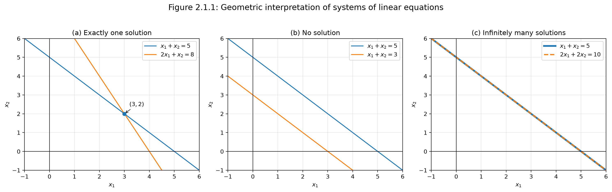

2.1 Systems of Linear Equations¶
Why This Section Matters¶
Systems of linear equations are one of the starting points of linear algebra.
A system of linear equations describes multiple linear constraints that must be satisfied at the same time. This idea appears constantly in machine learning: solving for model parameters, fitting linear regression models, understanding feature redundancy, and working with high-dimensional data matrices.
In this section, we learn:
- what a system of linear equations is,
- what it means to solve one,
- why a system can have no solution, one solution, or infinitely many solutions,
- how to interpret systems geometrically,
- how systems lead naturally to matrix notation.
1. Linear Equations¶
A linear equation is an equation where the unknown variables appear only to the first power and are not multiplied with each other.
For example,
is linear.
But the following are not linear:
A general linear equation with \(n\) unknowns has the form
where:
| Symbol | Meaning |
|---|---|
| \(x_1, x_2, \ldots, x_n\) | unknown variables |
| \(a_1, a_2, \ldots, a_n\) | known coefficients |
| \(b\) | known right-hand-side value |
Intuition
A linear equation says that a weighted combination of unknowns must equal a fixed value.
2. Systems of Linear Equations¶
A system of linear equations is a collection of linear equations that must all be true simultaneously.
A general system with \(m\) equations and \(n\) unknowns is
A solution is a tuple
that satisfies every equation in the system.
Example
Consider
Subtract the first equation from the second:
Therefore,
Substitute into the first equation:
So,
Hence the solution is
3. The Core Intuition¶
A system of linear equations is a set of constraints.
Each equation says:
The variables must combine in this particular way to produce this value.
Solving the system means finding values of the variables that satisfy all constraints at once.
For example, suppose a coffee shop produces two drinks:
- \(x_1\) = number of lattes,
- \(x_2\) = number of mochas.
Each latte uses 2 units of milk and 1 unit of espresso. Each mocha uses 1 unit of milk and 2 units of espresso.
If the shop wants to use exactly 11 units of milk and 10 units of espresso, then
Solving:
From the first equation,
Substitute into the second equation:
So,
Therefore,
so
Then
So the coffee shop should make:
4. Possible Solution Types¶
A real-valued system of linear equations can have only three possible solution behaviors:
- no solution,
- exactly one solution,
- infinitely many solutions.
It cannot have exactly two or exactly three solutions.
5. Case 1: No Solution¶
Consider
and
If the first equation is true, then multiplying it by 2 gives
But the second equation says
This is impossible.
Therefore, the system has no solution.
Intuition
A system has no solution when its constraints contradict each other.
6. Case 2: Exactly One Solution¶
Consider
and
Subtracting the first equation from the second gives
Then
So the system has exactly one solution:
Intuition
A system has one solution when the constraints are independent enough to pin down a single point.
7. Case 3: Infinitely Many Solutions¶
Consider
and
The second equation is just twice the first equation.
So both equations represent the same constraint.
The system is effectively just
Let
where \(t \in \mathbb{R}\).
Then
So the solution set is
Examples of valid solutions include
Intuition
A system has infinitely many solutions when at least one variable remains free.
8. Why Exactly Two Solutions Are Impossible¶
Suppose a linear system has two different solutions \(x\) and \(y\).
That means
and
Now take any linear interpolation between them:
where \(t \in \mathbb{R}\).
Then
Using linearity,
Since \(Ax = b\) and \(Ay = b\),
Therefore,
So every point on the line through \(x\) and \(y\) is also a solution.
Hence, if a linear system has two distinct solutions, it must have infinitely many solutions.
Takeaway
A linear system can have no solution, one solution, or infinitely many solutions — but not exactly two.
9. Geometric Interpretation¶
Two Variables: Lines¶
In two variables, each linear equation represents a line.
For example,
is a line in the \(x_1x_2\)-plane.
A system of two linear equations asks where the two lines intersect.
There are three possibilities.
One Intersection Point¶
If two lines meet at one point, the system has one solution.
Example:
The lines intersect at
No Intersection¶
If two lines are parallel and distinct, the system has no solution.
Example:
These lines never meet as shown in Figure 2.1 (b).
Same Line¶
If both equations describe the same line, the system has infinitely many solutions.
Example:
Both equations describe the same line; see Figure 2.1 (c).
Every point on that line is a solution.

Three possible geometric outcomes for two linear equations in two variables: one intersection point, no intersection, or the same line.10. Three Variables: Planes¶
In three variables, each linear equation represents a plane.
A system of equations asks where the planes intersect.
The solution set can be:
| Geometric situation | Solution type |
|---|---|
| planes do not share a common intersection | no solution |
| planes meet at one point | exactly one solution |
| planes intersect along a line | infinitely many solutions |
| equations describe the same plane or redundant constraints | infinitely many solutions |
Note
A plane is a flat two-dimensional surface living in three-dimensional space. It has length and width, but no thickness.
11. Redundant Equations¶
An equation is redundant if it does not add new information to the system.
Example:
Add the two equations:
So if the system also contains
then the third equation is redundant because it is already implied by the first two.
Intuition
Redundant equations do not change the solution set. They repeat information that is already present.
12. Matrix Form¶
The system
can be written compactly as
Here,
and
So:
| Object | Meaning |
|---|---|
| \(A\) | coefficient matrix |
| \(x\) | vector of unknowns |
| \(b\) | right-hand-side vector |
13. Row View¶
In the row view, each row of \(A\) represents one equation.
For example, if
then
means
and
Intuition
The row view sees a linear system as a collection of constraints.
14. Column View¶
In the column view, the system
is interpreted as a weighted combination of the columns of \(A\).
Suppose
Then
So solving
means finding weights \(x_1\) and \(x_2\) such that
where \(a_1\) and \(a_2\) are the columns of \(A\).
Intuition
The column view asks: can we build the target vector \(b\) by combining the columns of \(A\)?
15. Worked Example: Row and Column View¶
Consider
The system
means
From the first equation,
Substitute into the second:
So,
Therefore,
so
Then
Hence,
Column view:
So the solution tells us how to combine the columns of \(A\) to produce \(b\).
16. Connection to Machine Learning¶
Linear Regression¶
In linear regression, we often write the prediction problem as
This looks like a system of linear equations.
Here:
| Symbol | Meaning |
|---|---|
| \(X\) | data matrix |
| \(\theta\) | parameter vector |
| \(y\) | target vector |
If the equation
has an exact solution, we can fit the targets perfectly.
But real-world data is usually noisy, so an exact solution often does not exist.
Instead, linear regression solves an approximate problem:
The goal is to find the parameter vector \(\theta\) that makes predictions as close as possible to the observed targets.
17. Feature Redundancy¶
In machine learning, the columns of \(X\) often represent features.
If one feature can be expressed as a combination of other features, then the data matrix contains redundant information.
For example, suppose a dataset contains:
- price before tax,
- tax,
- total price.
If
then one column is determined by the others.
This can lead to non-unique parameter solutions.
In linear algebra, this is related to linear dependence.
In machine learning, this is related to multicollinearity.
18. Noisy Data and Inconsistent Systems¶
A system may have no exact solution when its equations contradict each other.
In machine learning, this is common because real-world data is noisy.
For example, two identical inputs may have different observed outputs due to measurement error.
Instead of requiring a perfect solution, machine learning usually searches for the best approximate solution.
This leads naturally to least squares.
19. Common Confusions¶
Confusion 1: Infinite solutions means every vector is a solution¶
No.
Infinite solutions usually means there is a structured set of solutions, such as a line or plane.
For example,
has infinitely many solutions, but not every pair \((x_1,x_2)\) is valid.
The pair \((100,100)\) is not a solution because
Confusion 2: No solution means the problem is useless¶
No.
In machine learning, no exact solution is normal.
It usually means we need an approximate solution.
This is the motivation behind least-squares regression.
20. Summary¶
A system of linear equations is a collection of linear constraints.
The general form is
The compact matrix form is
A system can have:
- no solution,
- exactly one solution,
- infinitely many solutions.
Geometrically:
- in two variables, equations are lines,
- in three variables, equations are planes,
- in higher dimensions, equations are hyperplanes.
The row view treats each equation as a constraint.
The column view treats \(Ax = b\) as asking whether \(b\) can be built from a weighted combination of the columns of \(A\).
Systems of linear equations are foundational for machine learning because they appear in linear regression, least squares, data matrices, feature redundancy, and parameter estimation.
21. Quick Check¶
- What makes an equation linear?
- Why can a linear system not have exactly two solutions?
- What does each equation represent geometrically in two variables?
- What does each equation represent geometrically in three variables?
- What is the difference between the row view and the column view of \(Ax=b\)?
- Why does noisy data often lead to systems with no exact solution?
- How is linear regression connected to systems of linear equations?
22. Key Formula Sheet¶
General linear equation:
General system:
Matrix form:
Column view:
Linear regression form: